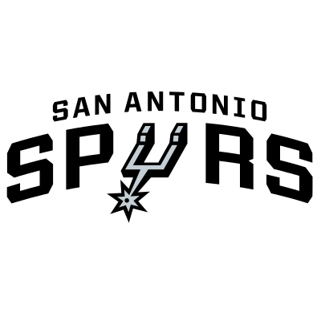

Jim Les vs Larry Krystkowiak
Team success, aligned by career season: final NBA finish, record in his games, playoffs and teammate help.
Head to head
| Category | Les | Krystkowiak |
|---|---|---|
| Career recordwin % in his games | 128–19339.9% | 207–21349.3% |
| W − L | −65 | −6 |
| Titles | 0 | 0 |
| Playoff trips | 2 | 7 |
| Deepest run | First round | Conference semifinals |
| Average finishadjusted for league size, lower leads | 21.8 of 30 | 13.8 of 30 |
| With vs withoutwin-rate gap in points, not a lead category | −4.8 | −9.5 |
| Help per seasonteammates' honors, less help leads | 3.1 | 2.9 |
Les leads 0 of 7 · Krystkowiak leads 6 of 7 · 1 even
Less help: Krystkowiak (2.9 per season vs 3.1). Help is the Teammates Score of the teammates he shared games with; the smaller number is tinted.
The leader's cell is tinted: the larger number, except average finish and help, where the smaller one leads. With vs without is shown for reference and is not counted. These are team records and finishes, not a measure of who was better.
Share this page's link; the image states the comparison and its scope.
Season by season
Career season 1 next to career season 1. Each player's season is the team he played the most games for; W–L is his teams' record in his games that season. The tinted finish is the team that finished higher that season, on the league-size-adjusted scale; the last column keeps the running count. Help counts honors won that season by teammates who shared a game with him. Comparison rules.
| # | Jim Les | Larry Krystkowiak | Better finish Les–Krystkowiak | ||||||||
|---|---|---|---|---|---|---|---|---|---|---|---|
| Season | Finish | W–L | Playoffs | Help | Season | Finish | W–L | Playoffs | Help | ||
| 1 | 1988-89 | #11 of 25 | 51–31 | First round | 15.0 | 1986-87  San Antonio | #20 of 23 | 23–45 | Missed the playoffs | 2.0 | 1–0 |
| 2 | 1989-90 LA Clippers | #21 of 27 | 2–5 | Missed the playoffs | 0 | 1987-88 | #12 of 23 | 24–26 | First round | 0 | 1–1 |
| 3 | 1990-91 | #25 of 27 | 19–36 | Missed the playoffs | 0.4 | 1988-89 | #6 of 25 | 47–33 | Conference semifinals | 3.0 | 1–2 |
| 4 | 1991-92 | #22 of 27 | 18–44 | Missed the playoffs | 0 | 1989-90 | #12 of 27 | 9–7 | First round | 1.0 | 1–3 |
| 5 | 1992-93 | #24 of 27 | 20–53 | Missed the playoffs | 1.1 | 1991-92 | #20 of 27 | 30–49 | Missed the playoffs | 0 | 1–4 |
| 6 | 1993-94 | #20 of 27 | 4–14 | Missed the playoffs | 4.0 | 1992-93 | #11 of 27 | 41–30 | First round | 10.0 | 1–5 |
| 7 | 1994-95 | #14 of 27 | 14–10 | First round | 1.0 | 1993-94 | #11 of 27 | 21–13 | First round | 3.2 | 1–6 |
| 8 | No season | 1994-95 | #8 of 27 | 11–8 | Conference semifinals | 6.0 | |||||
| 9 | No season | 1996-97 | #7 of 29 | 1–2 | Conference semifinals | 1.2 | |||||
- Career season 1better finish so far: Les 1–0 Krystkowiak
- Career season 2better finish so far: Les 1–1 Krystkowiak
- Career season 3better finish so far: Les 1–2 Krystkowiak
- Career season 4better finish so far: Les 1–3 Krystkowiak
- Career season 5better finish so far: Les 1–4 Krystkowiak
- Career season 6better finish so far: Les 1–5 Krystkowiak
- Career season 7better finish so far: Les 1–6 Krystkowiak
- Career season 8
- Career season 9
Why these two: Careers centered on 1991-92 and 1990-91; help 3.1 and 2.9 points per season; own honors 0.0 and 0.0 per season; 321 and 420 games.